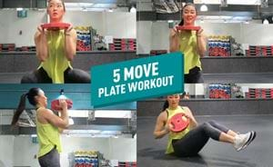
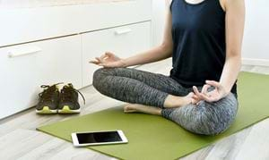
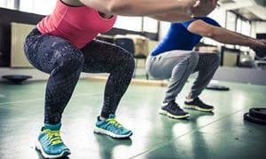
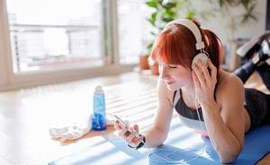

At Home Ab Workout

If you search for “home ab exercises” on the internet you’ll probably come across hundreds of ab exercises to choose from so it can be a little overwhelming and difficult to figure out which ab workouts are best suited for beginners. To help you with this, we’ve come up with a 5 move ab workout that’s both effective and beginner-friendly in building a solid foundation to a strong core. All you need for this ab workout is a mat so you can try this out at home or in the gym. This workout roughly takes 10-15 minutes.
Full Body Home Workout
Target multiple areas of the body with this full body workout using just two weighted plates. Grab 2 plates of the same weight and let's get into the workout. PureGym Insider Kay recommends starting with two 5kg plates for beginners. If this weight is too easy, then look to increase the weight but make sure the weight doesn't compromise your form.
The Top 5 Free Mindfulness Apps
As life gets increasingly busy with more distractions vying for our time, it's never been more important to be mindful of what's going on inside and outside our bodies. According to Professor Mark Williams, former director of the Oxford Mindfulness Centre, mindfulness is living in the moment and being aware of our thoughts and feelings as they happen. "When we do that, it can positively change the way we see ourselves and our lives." [1] Tuning into your body's thoughts and emotions not only helps you become more aware of the signs of stress, it gives you the opportunity to deal with them. Of course, some stress is good for you but too much can cause serious issues including heart disease, stroke, asthma, diabetes and some types of cancer. [2] The National Institute for Health and Care Excellence (NICE) also recommends mindfulness as a way to prevent depression in those who've had 3 or more bouts of depression in the past. [1]
How to workout and stay active at home

Is it possible to get a good workout in at home? Do I need to get equipment? How do I stay motivated to workout at home? Where do I start? We’ve got you covered! Here’s our guide to help you stay fit and active from home.
Using Your Own Bodyweight to Workout
No matter how much you love working up a sweat on the rowing machine and throwing massive iron plates over your head in the power rack, there’s always room for simple bodyweight exercises. It’s great to break up your regular routine with simple, yet very effective body weight exercises between cardio workouts or weight training to keep your blood pumping. For those reasons (among others), getting comfortable with bodyweight training is one of the greatest fitness skills anyone can attain. Here’s a look at some essential movements.
What the world is listening to during their home workouts
We know how important music is when working out. In fact, science has actually proven that listening to music when exercising can help improve endurance and your mood. So, it’s understandable that lots of people can spend hours curating the perfect playlist for their workout. With many people around the world adjusting their fitness plans and adopting a home exercise routine right now, we have created our own home workout playlist - PureGym Home Workout - available on Spotify to help members stay active from home.